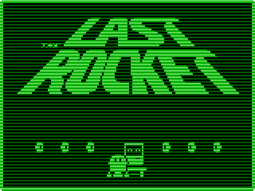

Tap, swipe and hold to guide Flip, The Last Rocket, through 64 rooms of spikes, fans, mines, flamejets and more. Collect all the scattered Memory Gears to help AMI, the onboard Autonomous Mechanical Intelligence, escape before the ship falls into a star! Play The Last Rocket!
Celebrate the one year anniversary of the release of The Last Rocket (included in Edge Magazine’s 50 Must Play iOS Games and Touch Arcade’s Best iOS Games of 2011) by playing it again, reading about its development, or continuing the adventure in Flip’s Escape for iOS!
- The Last Rocket iOS
- The Last Rocket tvOS
- The Last Rocket Mac
- The Last Rocket Original Sound Version
- Lift Off: The Last Rocket Development Diary
Copyright 2011 Shaun Inman.